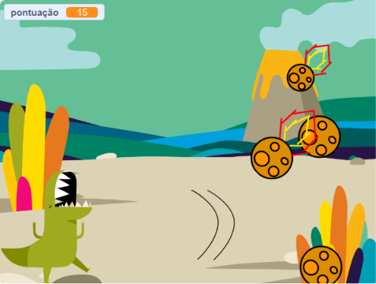
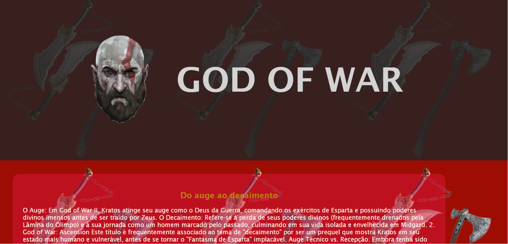
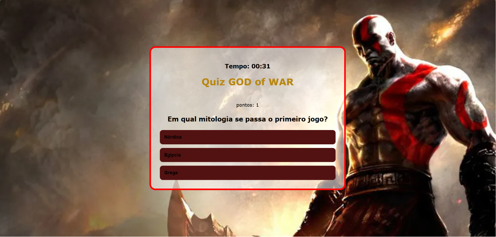

Eu sou um menino muito produtivo
Ver ProjetosOlá! Meu nome é Augusto e eu tenho 12 anos e moro em Itajaí. No meu tempo livre, eu gosto principalmente de jogar FPS, especialmente Counter-Strike 2, e prefiro jogar com amigos. Além de jogar, eu gosto de ver vídeos de humor. Na escola, minha matéria favorita é Ciências, e dentro disso eu me interesso mais por biologia ligada a animais e comportamento predatório. Sobre animais, eu mostro bastante interesse em espécies inteligentes, como o carcaráca e os corvos, gostando principalmente da inteligência e capacidade de adaptação deles. No geral, eu gosto bastante de coisas que envolvem estratégia, inteligência e raciocínio, tanto em jogos quanto na natureza.



Email:Augusto240214@gmail.com